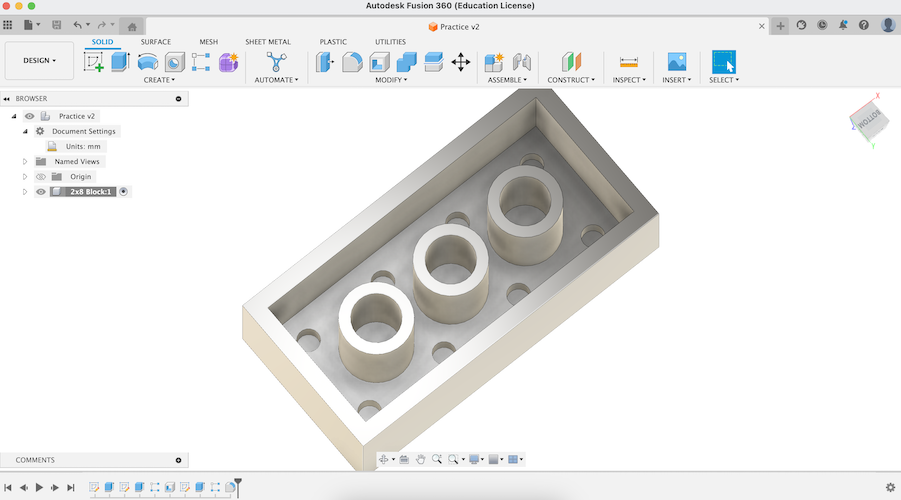
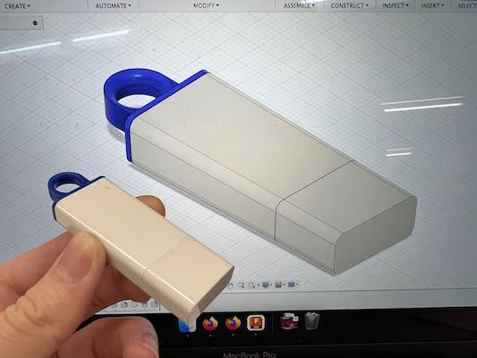
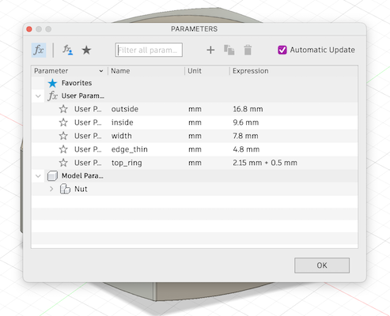
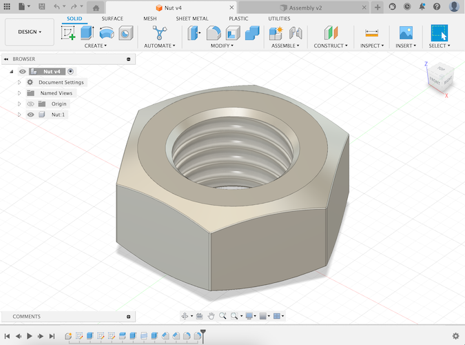
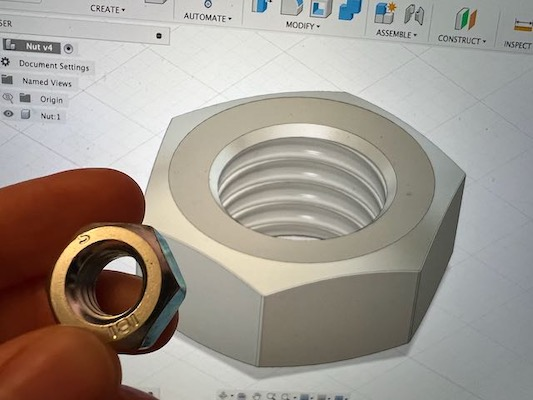

<div class="textcontainer">
<p class="margin"> </p>
<h3>Week 2: 2D Design & Cutting</h3>
<p class="margin"> </p>
<div class="flexrow">
<a id="btn" href="./week2.zip" download>Download my CAD files from this week!
</a>
</div>
<p class="margin"> </p>
<h4>Assignment 1: Create a Box</h4>
For this assignment we were tasked with creating a shoe sized box to hold our class items. This project started a little challenging for me because I had issues with my laptop. I quickly realized that the laptop I had gotten was lacking a bit in processing power to properly use the CAD software. Thankfully I was able to use my desktop Mac instead. The CAD software was pretty easy to install and the tutorial provided by Nathan gave me a straight forward process on how to build my box on fushion 360. I had also took notes during class that gave me some reference material that came in handy later.
Using Nathans tutorial I set out to build my first box. Using the parameter settings made it easy to adjust the sizes. One initial issue I had was getting the right side of the box to turn blue in the CAD software. When it doesn’t turn blue when you hover over a section it means that the box is not fully enclosed. I went to open lab and worked with Bobby to remedy the issue. The issue was an incorrect setting when I went to expand the box.
After this issue was remedied I use the mirror function to create separate mirror points. I learned that when you hover your mouse over the middle of the box it will turn into a “triangle” this triangle means that you are at the center. After creating the mirror points I was able to mirror the sides of the box over.
<p class="margin"> </p>
<p class="margin"> </p>
<div class="flexrow">
<img src="./tilemath2.jpeg" alt="Fushion 360 diagram of cardboard box">
</div>
<p class="caption">Fushion Diagram</p>
<p class="margin"> </p>
Once I felt happy with the box it was time to export the box. This is where I ran into another issue. I initially exported the document by going to file -> export. For some reason when exporting this way my dimensions would not properly show up when I put the file into Rhino. Bobby showed me the proper way to export by right clicking the sketch and exporting as dxf. I put the file on the thumb drive and imported into the Rhino computer next to the laser cutter. My sketch showed up with the right dimensions. Unfortunately, I had duplicate lines which through off my kerf. This kept my box from properly closing. To fix the issue I used the explode function on rhino as well as the “dup” function to find and delete all of the duplicate lines. Once all of the duplicate lines were deleted I changed the layers of various lines. I set the inner rectangle line to the etch layer and the outside lines to the cut layer. I then used ctrl p to verify the lay out and move the file to the laser cut software. Once the software was up and running I turned on the laser cuter and put in a piece of cardboard. Once the cardboard was in the cutter I used the software to move the laser to the outer boundaries of my template to make sure there was enough cardboard for my box. After this was done I chose med board from the cut settings and turned up the power of the etch to about 14% to ensure the laser would cut enough cardboard away for the box to fold properly. After this I sent the file to be lasered. The box came out as expected except one part of the box was double cut by the laser and it would not close properly in the fingers. I ended up having to use tape to get one side of the box to close.
<p class="margin"> </p>
<p class="margin"> </p>
<div class="flexrow">
<img src="./tilemath2.jpeg" alt="Cardbord rectangular box">
</div>
<p class="caption">Final Box</p>
<p class="margin"> </p>
<p class="margin"> </p>
<h4>Assignment 2: Fusion 360 Tutorial</h4>
<p class="margin"> </p>
I found a tutorial on YouTube for modeling a Lego brick, so I decided to follow
that. Most of the steps I found fairly easy, just through the skills I had
learned in class and figured out through trial-and-error by that point. (For
instance, I put all the dimensions given in the tutorial into parameters like
we learned in class, in case I ever want to change the shape of my lego block.)
I did learn some new tricks, though, including the fillet tool and the shell
tool. The tutorial also advised viewers to organize models within a file into
components, which seemed like a good idea to me.
<p class="margin"> </p>
<a href="https://youtu.be/6yPKMSb6ja8" target="_blank">Watch the tutorial yourself here!</a>
<p class="margin"> </p>
One fun thing I didn't learn from the tutorial (but afterwards looked up
separately online, because I was curious) was how to change the appearance of
solid bodies by applying a material to them and then editing the color of that
material. This was a familiar concept to me because of my experience with
Blender, but I hadn't known it was a thing you could do in Fusion 360. I used
that skill to make my Lego block a nice red color :)
<p class="margin"> </p>
<div class="flexrow">
<img src="./brick_nocolor.png" alt="a gray 3D model of a 2x4 Lego block.">

</div>
<div class="flexrow">
<img src="./brick_color.png" alt="the same Lego block from the top, now colored red.">
</div>
<p class="caption">Top: the Lego block before its makeover. Bottom: a screenshot of me changing the block to be red.</p>
<p class="margin"> </p>
<p class="margin"> </p>
<h4>Assignment 3: Fusion Modeling</h4>
<p class="margin"> </p>
<div class="flexrow">
<img src="./assembly.png" alt="a CAD model of a flash drive sitting on top of five CAD-modeled metal nuts.">
</div>
<p class="caption">My final assembly: a tableau of my flash drive and several copies of the metal nut I modeled.</p>
The first item I chose to model was my trusty flashdrive. I figured this would
be a good choice, because it was a combination of things I was pretty sure I
knew how to do (the rectangular body of the drive) plus some stuff I knew I'd
have to figure out (the circular hook on the end of the drive).
<p class="margin"> </p>
<div class="flexrow">
<img src="./drive_params.png" alt="a dialog box showing the parameter dimensions of the flash drive.">
</div>
<p class="caption">The parameters for my flash drive. I knew the round hook was going to be tricky.</p>
I started with a basic rectangular prism, then used the fillet tool on the
edges to round them off. I thought up a few possible strategies for the hook on
the end, but I ended up extruding out a rectangular prism, cutting a hole in it
by extruding a circle, and then using fillet on the edges of the circle to make
the interior rounded edge.
<p class="margin"> </p>
Finally, for the seams in the body, I figured out how to use the split body tool
to create an edge at the correct distances, then used fillet just the tiniest
bit to create the small divot where the plastic parts fit together. For the
finishing touches, I added materials and color matched the model to my real
flash drive. It ended up looking pretty similar!
<p class="margin"> </p>
<div class="flexrow">
<img src="./flashdrive_nocolor.png" alt="a gray 3D model of a standard flash drive." width="80%">

</div>
<p class="caption">The completed model pre-coloring, plus a photo of it the original flash drive in front of the colored model.</p>
<p class="margin"> </p>
For my second model subject, I picked a large metal nut I found in the lab
hardware supply. At first, I thought this would be easy: all I had to do was
make a hexagon, extrude it, cut a hole in the middle with a cylinder, and add
threads with the built-in thread tool.
<p class="margin"> </p>
<div class="flexrow">

</div>
<p class="caption">The parameters I measured for my nut. How hard can it be, right?</p>
<p class="margin"> </p>
However, I soon realized the bevel on edges of the nut was going to cause
problems. After much trial and error (and looking up some
<a href="https://youtu.be/c5UR_zdANJ4?t=110" target="_blank">tutorials</a> on
the Internet), I learned how to use the extrude tool with a taper angle to get
the result I wanted. The threads also caused me some problems, because Fusion
automatically corrects the hole size to a standard measurement but I couldn't
find one that matched the size I had measured on my nut. Eventually, I just went
with the standard option that was closest in size to what I was looking for.
<p class="margin"> </p>
<div class="flexrow">


</div>
<p class="caption">The completed nut model, plus a photo of it with the original nut held up in front for comparison.</p>
</div>